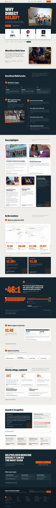
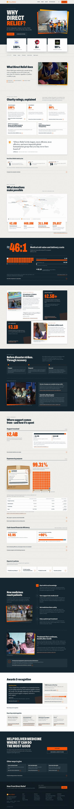
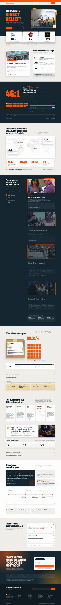

Each hi-fi round of the Why Direct Relief page. On desktop, hover a thumbnail to scroll through the whole page.

v5’s content reorganized from Susan’s review. Stages and partnership are one section, the stories sit together, and the data runs under numbered headlines. Five sections are cut.

The client prototype’s copy, in its order, set in the v4 design system with logo rating cards and Schibsted labels.

Our proposed structure: status strip, donation manifest, map, timeline, FAQ and donation form.